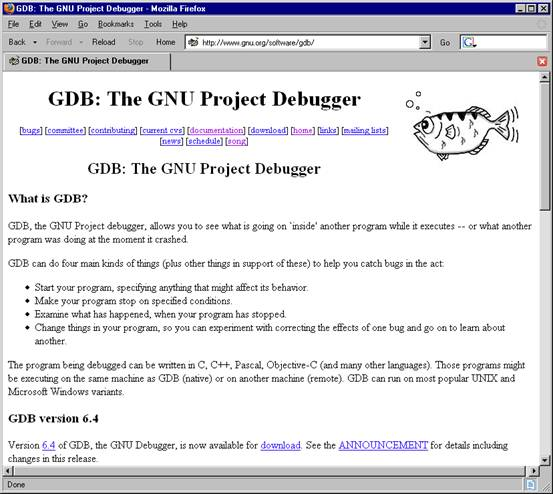
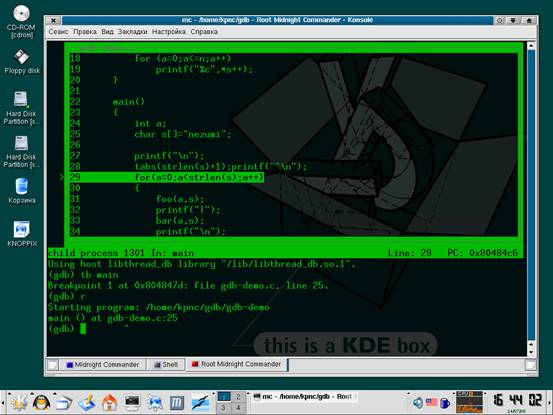
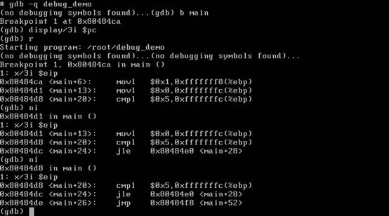
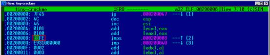

GDB – один из самых мощных отладчиков из всех когда-либо созданных, однако, переход с soft-ice на gdb обычно протекает очень болезненно. запустив gdb, мы попадаем в совершенно иной мир, похожий на дремучий лес, в котором очень легко заблудиться, но мыщъх покажет как обустроить gdb для хакерский целей, вырыть уютную нору и сделать свои первые шаги на пути к истинному Дао gdb.
Под LINUX/BSD существует множество отладчиков, но общепризнанный лидер это, бесспорно, GDB, входящий в состав практически любого дистрибутива. Внешне (только внешне!) схожий с debug.com, он так и дышит мощью, поражающей воображение и потрясающей создание по мере его освоения.
Да-да, именно освоения! В отличии от soft-ice, gdb основан на невизуальных концепциях и ориентирован на удобство работы, а совсем не на легкость освоения. В нем заложено _столько_ возможностей, что их совершенно невозможно загнать в прокрустово ложе визуального интерфейса. По количеству органов управления gdb сравним разве что с истребителем и прежде, чем эта махина стронется с места, приходится перетрахать сотни страниц документации, отказаться от всех прежних привычек и понятий, вывернуть сознание наизнанку и поехать крышей. Зато потом soft-ice покажется жалкой поделкой, на которую невозможно смотреть без содрогания.

Рисунок 1 www.gnu.org/software/gdb — официальный сайт отладчика gdb (русская документация находится на mitya.pp.ru/gdb)

Рисунок 2 собственная интерактивная "морда" отладчика gdb
Все графические морды (типа DDD) идут в топку, поскольку дискредитируют философию интерактивной отладки и превращают gdb в некоторое подобие морской свинки (и не свинки, и не морской), к тому же gdb имеет свою собственную встроенную "морду", вызываемую ключом "-tui" командой строки и ориентированную преимущественно на отладку приложений с исходными текстами. Для хакеров же она практически бесполезна.

Рисунок 3 родная стихия профессионалов
Загрузка исполняемых файлов в отладчик обычно осуществляется заданием их имени (при необходимости – с путем) в командной строке. При этом полезно указывать ключ "‑quiet" (или, сокращенно, "-q") для подавления надоедливого копирайта.
Для передачи программе аргументов, используйте ключ "--args" за которым следует имя отлаживаемого файла с его аргументами (обработка ключей gdb при этом прекращается, поэтому "--args" должен стоять последним в строке).
#gdb -q gdb-demo
Листинг 1 загрузка файла gdb-demo в отладчик из командной строки без аргументов
#gdb -q --args gdb-demo arg1 arg2...argN
Листинг 2 загрузка файла gdb-demo в отладчик из командной строки с аргументами
Отладчик печатает приглашение "(gdb)", ожидая ввода команд. При желании, отлаживаемый файл можно загрузить непосредственно из отладчика командой "file":
#gdb -q
(gdb)file gdb-demo
Reading symbols from gdb-demo...done
Листинг 3 загрузка файла gdb-demo из отладчика
Внимание! В отличие от soft-ice/turbo-debugger/ollydbg и прочих windows-отладчиков, в gdb программа после загрузки еще _не_ готова к работе! Она не имеет регистрового контекста и потому команды трассировки нам недоступны, однако, мы можем устанавливать точки останова внутри программы (не на библиотечные функции!), просматривать/модифицировать память, дизассемблировать код и т. д.
Обычно, первым (разумным) действием после загрузки становится установка точки останова на функцию main (главную функцию языка Си) или _start – точку входа в программу, что осуществляется командой "tb адрес/имя", устанавливающей "одноразовую" точку останова, после чего можно смело пускать программу командой "run" (или "r"), зная, что отладчик "всплывет" в точке останова.
#gdb -q gdb-demo
(gdb) tb main
Breakpoint 1 at 0x8048473
(gdb) r
Starting program: /home/kpnc/gdb/gdb-demo
0x08048473 in main ()
Листинг 4 установка точки останова на main
Загрузка исполняемых файлов без символьной информации. Если символьная информация отсутствует (например, была отрезана утилитой strip, как _очень_ часто и бывает), то установка точек останова на _start/main становится невозможной и мы должны указать отладчику "физический" адрес точки входа, который можно получить, например, при помощи утилиты objdump, запущенной с ключом -f:
#strip gdb-demo
#objdump -f gdb-demo
gdb-demo: O : i386, EXEC_P, HAS_SYMS, D_PAGED
архитектура: i386, флаги 0x00000112:
EXEC_P, HAS_SYMS, D_PAGED
начальный адрес 0x08048300
# gdb -q gdb-demo
(no debugging symbols found)...
(gdb) b main
Function "main" not defined.
Make breakpoint pending on future shared library load? (y or [n]) n
# ^ установка точки останова на main провалилась, (т.к. символьной информации нет)
# отладчик предложил установить ее позднее, когда такой символ станет доступен,
# но мы от этого отказались, поскольку такой символ не станет доступен никогда
(gdb) tb *0x8048300
Breakpoint 1 at 0x8048300
# ^ установка точки останова по непосредственному адресу прошла успешно
(gdb) r
Starting program: /home/kpnc/gdb/gdb-demo
(no debugging symbols found)...
0x08048300 in ?? ()
Листинг 5 загрузка программы со стрипнутой символьной инфой
Подключение к уже запущенному процессу. Если процесс, который необходимо отлаживать, _уже_ запущен, к нему можно подключиться либо указав его идентификатор вместе с ключом "-pid" в командной строке, либо воспользовавшись командой "attach идентификатор", непосредственно из самого отладчика. Отсоединиться от процесса можно либо командой "detach" (запущенной без аргументов) или же выходом из отладчика по команде "quit" (или "q"). После отсоединения процесс продолжает свою работу в нормальном режиме, а если его необходимо завершить, на помощь приходит команда "kill", убивающая текущий отлаживаемый процесс.
#ps -a
PID TTY TIME CMD
8189 pts/7 00:00:00 gdb_demo
8200 pts/5 00:00:00 ps
# gdb -q -pid 8189
Attaching to process 8189
Reading symbols from /home/kpnc/gdb/gdb_demo...done.
Reading symbols from /lib/libc.so.6...done.
Reading symbols from /lib/ld-linux.so.2...done.
0x400f2ab8 in read () from /lib/libc.so.6
(gdb)
Листинг 6 подключение к уже запущенному процессу через командную строку
#gdb -q
(gdb) attach 8189
Attaching to process 8189
Reading symbols from /home/kpnc/gdb/gdb_demo...done.
Reading symbols from /lib/libc.so.6...done.
Reading symbols from /lib/ld-linux.so.2...done.
0x400f2ab8 in read () from /lib/libc.so.6
(gdb)
Листинг 7 подключение к уже запущенному процессу командной attach
Загрузка программ с потрепанными заголовками. Если заголовок elf-файла умышленно искажен (как, например, в случае, описанным в статье "особенности дизассемблирования под LINUX на примере tiny-crackme", опубликованной в "хакере"), то gdb наотрез откажется загружать его. Пример такого файла можно найти на: www.crackmes.de/users/yanisto/tiny_crackme/.
Выход — циклим elf в точке входа, запускаем и подключаемся к процессу командой "attach" (или "gdb -pid идентификатор"), а после попадания в отладчик восстанавливаем оригинальные байты и приступаем к трассировке в обычном режиме. Покажем, как это осуществить на практике.
Загружаем tiny-crackme в любой hex-редактор (например, в hte или hiew), переходим в точку входа (в hiew'е это осуществляется нажатием <ENTER> (для перехода в hex-режим), <F8> [header], <F5> [entry]). Запоминаем (записываем на бумажку) содержимое двух байт под курсором (в нашем случае они равны B3h 2Ah) и заменяем их на EBh FEh, что соответствует инструкции jumps $.

Рисунок 4 зацикливание программы в hiew'e
Сохраняем изменения, запускам файл, определяет его pid, подключаем к процессу отладчик. На этот раз gdb хоть и ругается на неверный формат, но все-таки подключается к процессу, предоставляя нам полную свободу действий. Но прежде, чем начать трассировку, необходимо расциклить файл, вернув пару байт из точки входа на место.
Модификация памяти (регистров и переменных) осуществляется командой "set", в нашем случае вызываемой следующим образом:
./tiny-crackme
# запускаем зацикленный tiny-crackme и переходим на соседней консоли
# ps -a
PID TTY TIME CMD
13414 pts/7 00:00:03 tiny-crackme
13419 pts/5 00:00:00 ps
# gdb -q
(gdb) attach 13414
Attaching to process 13414
"/home/kpnc/gdb/tiny-crackme": not in executable format:
File format not recognized
# ^ gdb ругается на неверный формат файла,
# но все-таки аттачится к процессу
(gdb) set *(unsigned char*)$pc = 0xB3
(gdb) set *(unsigned char*)($pc+1) = 0x2A
# ^ восстановление оригинальных байт командой set
Листинг 8 загрузка зацикленного файла с потрепанным заголовком и восстановление оригинальных байт
Здесь "$pc" (с учетом регистра!) – условное обозначение регистра-счетчика команд (program count), а "*(unsigned char*)" – явное преобразование типа, без которого gdb ни за что не сможет определить размер записываемой ячейки. Довольно длинная конструкция и у нас возникает естественное желание ее сократить.
Отладчик помнит историю команд и чтобы не вводить уже введенную команду, достаточно нажать "стрелку вверх" и отредактировать строку. В нашем случае — заменить "$pc = 0xB3" на "($pc+1) = 0x2A". Уже короче! Но… все равно длинно. (Примечание: по умолчанию gdb не сохраняет историю команд и она действительна только в пределах одного сеанса, чтобы задействовать автоматическое сохранение, необходимо набрать "set history save on", чтобы не делать это при каждом запуске gdb, можно занести это последовательность в .gdbinit файл расположенный в HOME или текущей директории).
И вот тут мы подходим к одному из главных преимуществ gdb над soft-ice. Отладчик gdb неограниченно расширяем и поддерживает продвинутый интерпретатор, позволяющий среди прочего объявлять свои переменные, начинающиеся со знака "$", с которыми можно делать что угодно.
Улучшенный вариант выглядит так:
(gdb)set $i = $pc
(gdb)set *(unsigned char*)$i++ = 0xB3
(gdb)set *(unsigned char*)$i++ = 0x2A
Листинг 9 восстановление ячеек памяти с использованием переменной $i
Здесь, после ввода "set *(unsigned char*)$i++ = 0xB3" мы нажимаем "стрелку вверх" и всего лишь меняем 0xB3 на 0x2A (переменная $i увеличивается сама), что намного короче, но... все равно длинно и нудно.
А давайте объявим свою собственную пользовательскую команду! Это делается с помощью "define" и в нашем случае выглядит так:
(gdb)define dd
type command for definition of "dd".
end with a line saying just "end".
>set *(unsigned char*) $arg0 = $arg1
>end
Листинг 10 объявление пользовательской переменной dd, записывающей байт по указанному адресу
Обратите внимание, как gdb изменил тип приглашения (">"), когда началось определение команды! Закончив писать, мы говорим "end" и новая команда добавляется в память gdb наряду со всеми остальными. Она принимает два аргумента $arg0 – адрес по которому писать и $arg1 – записываемый байт.
Теперь для восстановления байт в точке входа, достаточно дать следующую последовательность команд (внимание! если написать "dd $pc++ 0xB3", то после выполнения команды регистр $pc увеличится на единицу, что никак не входит в наши планы!):
(gdb)set $i = $pc
(gdb)dd $i++ 0xB3
(gdb)dd $i++ 0x2A
Листинг 11 восстановление ячеек памяти через пользовательскую команду
Пользовательские команды существуют только на протяжении текущего сеанса, погибая при выходе из gdb, что не есть хорошо, однако, мы можем загнать их в командный файл, который в нашем случае выглядит так:
define dd
set *(unsigned char*)$arg0 = $arg1
end
Листинг 12 файл n2k_cmd, содержащий определение команды dd
Загрузка командного файла в память осуществляется командой "source имя_файла" (в нашем случае: "source n2k_cmd"), причем, поскольку gdb поддерживает автозавершение ввода (свойственное практически всем UNIX-программам) совершенно необязательно выписывать "source" целиком. Достаточно набрать "so" и нажать <TAB>. Отладчик самостоятельно допишет остальное. Если существует несколько команд, начинающихся с "so", вместо автозавершения раздастся мерзкий писк, сигнализирующей о неоднозначности. Повторное нажатие TAB'а приводит к выводу всех возможных вариантов.
Создавая свои собственные команды (загружаемые из .gdbinit файла или вручную), мы не только обеспечиваем комфортную работу, но и увеличиваем производительность труда! Те, кто обвиняют gdb в неудобстве, просто не умеют затачивать его под себя, но мы, мыщъх'и, — умеем! Кстати, сейчас как раз время чтобы что-нибудь заточить.
В отличии от soft-ice (и даже debug.com!), gdb не показывает мнемоники машинных инструкций при трассировке, если его об этом не просят, что сильно смущает новичков, но идеологически так намного правильнее. Отобразить машинную команду по произвольному адресу можно с помощью команды "x/i адрес", например:
(gdb)x/i 0x200008
0x200008: jmp 0x200008
Листинг 13 отображение машинной команды по заданному адресу
Вместо адреса можно использовать любое другое выражение, переменную или регистр (если регистры доступны), однако, отлаживать программу в таком режиме _крайне_ неудобно и лучше задействовать режим автоматического отображения, задаваемый командой "display".
Режим автоматического отображения позволяет выводить значение любого выражения, регистра, ячейки памяти, машинной инструкции при каждой остановке gdb (например, при пошаговом выполнении). Команда "display/i $pc" (которую достаточно дать один раз за весь сеанс), будет отображать одну машинную инструкцию под $pc за раз, однако, это не очень удобно и на практике постоянно возникает необходимость узнать — какая же будет следующая инструкция за выполняемой. Мыщъх обычно выводит по три инструкции за раз: "display/3i $pc" и довольствуется жизнью в полный рост.
(gdb) display/3i $pc
1: x/3i $pc
0x200008: mov $0x2a,%bl
0x20000a: jmp 0x200040
0x20000f: add %al,(%edx)
(gdb) ni
0x0020000a in ?? ()
1: x/3i $pc
0x20000a: jmp 0x200040
0x20000f: add %al,(%edx)
0x200011: add %al,(%ebx)
(gdb) ni
0x00200040 in ?? ()
1: x/3i $pc
0x200040: jmp 0x200046
0x200045: mov $0xe8,%al
0x200047: movsl %ds:(%esi),%es:(%edi)
Листинг 14 автоматическое отображение 3х инструкций при трассировке в формате AT&T
Для автоматического отображения значения регистров достаточно дать команду "display регистр", где регистр — $eax, $ebx, $ecx и т. д. Для регистра-указателя текущего положения стека существует специальное имя — $sp, которое можно использовать наравне с $esp (точно так же, как $pc <--> $eip). Автоматических отображений может быть создано сколько угодно и любое из них всегда может быть уделено командой "undisplay n1 n2 .. nn", где nx – номер отображения, которой можно узнать по команде "info display". Временно выключить отображение помогает команда "disable display n1 n2 ... nn", а enable display – включает обратно.
Переключение режима дизассемблирования ATT&T|Intel. По умолчанию, gdb использует синтаксис AT&T, но может выводить инструкции и в формате Intel, для чего достаточно дать команду "set disassembly-flavor intel", а чтобы вернуться назад: "set disassembly-flavor att". Вот, сравните это с листингом 14.
(gdb) set disassembly-flavor intel
(gdb) display/3i $pc
1: x/3i $pc
0x200008: mov bl,0x2a
0x20000a: jmp 0x200040
0x20000f: add BYTE PTR [edx],al
(gdb) ni
0x0020000a in ?? ()
1: x/3i $pc
0x20000a: jmp 0x200040
0x20000f: add BYTE PTR [edx],al
0x200011: add BYTE PTR [ebx],al
(gdb)
0x00200040 in ?? ()
1: x/3i $pc
0x200040: jmp 0x200046
0x200045: mov al,0xe8
0x200047: movs es:[edi],ds:[esi]
Листинг 15 автоматическое отображение 3х инструкций при трассировке в формате Intel
Перенаправление ввода/вывода. По умолчанию, gdb связывает со стандартным вводом/выводом отлаживаемой программы текущую консоль, в результате чего сообщения программы перемешиваются с сообщениями отладчика. Чтобы навести порядок, необходимо перенаправить в/в программы в отдельную консоль, что осуществляется командой "tty консоль". Открываем новую консоль, даем UNIX-команду "tty" для определения ее имени (например, "/dev/ps/6"), возвращаемся к консоли отладчика и говорим: "tty /dev/ps/6".
Вывод выражения на экран. Для вывода выражений используется команда "print" или ее более короткий псевдоним "p" за которым следует выражение.
Например:
(gdb) p 2*2
$1 = 4
(gdb) p $1 + 3
$2 = 7
(gdb) p $sp
$3 = (void *) 0xbffffb40
# вывод значение $sp
(gdb) p/x *(unsigned int*) $sp
$4 = 0x1
# вывод ячейки, на которую указывает $sp в hex-формате
(gdb) p/u *(unsigned int*) $sp
$5 = 1
# вывод ячейки, на которую указывает $sp в unsigned dec-формате
(gdb) p *0xbffffB3F
$6 = 256
# вывод содержимого ячейки в dec-формате (по умолчанию)
(gdb) p/x *0xbffffB3F
$7 = 0x100
# вывод содержимого ячейки в hex-формате
Листинг 16 демонстрация возможностей print
Как видно, при каждом выводе значения, "print" создает переменную, которую можно использовать в последующих выражениях, что _очень_ удобно. Так же доступа функция "printf" со стандартным набором спецификаторов, которая особенно удобна в командных файлах. Например: 'printf "%x %x %x\n",$eax,$ebx,$ebx', выводит значение сразу трех регистров. Обратите внимание на отсутствие круглых скобок вокруг нее!
Мы успешно загрузили исполняемый файл внутрь gdb, вплотную приблизившись к трассировке и в следующей статье покажем как работать с машинным кодом, устанавливать точки останова, изменять поток выполнения программы и делать много других удивительных вещей. Потенциал gdb только начинает раскрываться…